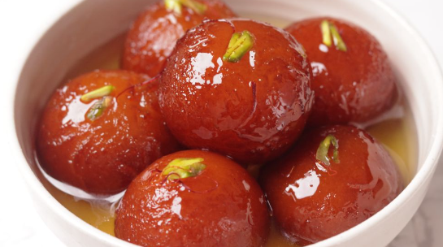
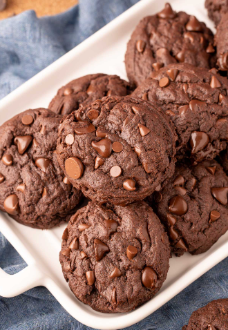

Gulab Jamun
Ingredients
- 1 cup dry milk powder
- 3 tablespoons all-purpose flour
- 2 tablespoons ghee (clarified butter), melted
- ½ teaspoon baking powder
- ½ cup warm milk
- 1 tablespoon chopped almonds (Optional)
- 1 tablespoon chopped pistachio nuts (Optional)
- 1 tablespoon golden raisins (Optional)
- 1 pinch ground cardamom
- 1 quart vegetable oil for deep frying
- 1 ¼ cups white sugar
- 7 fluid ounces water
- 1 teaspoon rose water
- 1 pinch ground cardamom
Instructions
- Combine sugar and water in a pan and bring to a boil to create the syrup. Remove from heat, add cardamom, and set aside to cool.
- In a mixing bowl, combine flour, paneer, sooji, Nestlé MILKMAID, baking powder, and baking soda. Mix gently to form a soft dough, avoiding over-kneading.
- Divide the dough into 30-35 portions and gently shape them into round balls.
- Heat oil on low flame and fry the balls until they turn golden brown.
- Transfer the fried Gulab Jamuns into the cooled sugar syrup. Once all the Gulab Jamuns are added, bring the syrup to a boil again briefly, then remove from heat.
- Enjoy your homemade Gulab Jamun warm, garnished with your favourite toppings.

Choclate Chip Cookies
Ingredients
- 250g all-purpose flour
- 125g butter
- 100g sugar
- 1 egg
- 200g chocolate chips
Instructions
- Preheat oven to 180°C (350°F).
- Cream butter and sugar.
- Add egg and mix.
- Stir in flour and chocolate chips.
- Bake for 10-12 minutes.